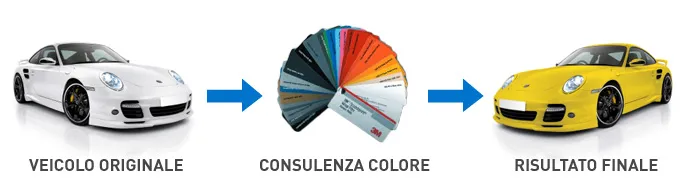
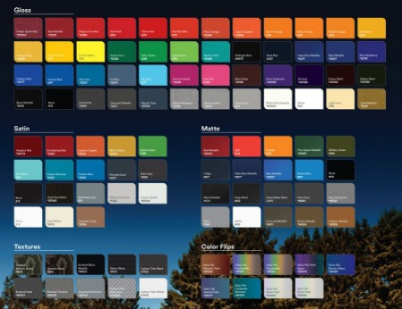
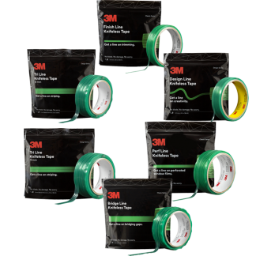

LE PELLICOLE DA WRAPPING SONO PRODOTTI CERTIFICATI E SICURI. NOI DI GEKO-WRAPPING USIAMO SOLO PELLICOLE 3M
Per il tuo car wrap la scelta della pellicola è fondamentale. Soprattutto se possiedi una Porsche, Ferrari o Lamborghini. Il cambio colore di auto di prestigio non può essere fatto con una pellicola qualsiasi, ma solo con pellicole d’eccellenza e specifiche.
Per questo motivo offriamo una gamma di prodotti esclusivamente di qualità, che oltre ad essere certificati promettono e mantengono tutti i requisiti dettati nel materiale pubblicitario. Dalla lunga durata fino alla più sicura rimozione per il ripristino.
Le pellicole sono di tipo cast, prodotti conformabili e disponibili in centinaia di colori e finiture. I nostri consulenti ti assicurano suggerimenti tecnici ed estetici in modo preciso e professionale per portarti fino alla migliore scelta di prodotto per la tua auto.
In sede, puoi vedere tutti i cataloghi prodotti, richiedere informazioni specifiche e toccare con mano le finiture.
Progettato con uno speciale film protettivo (Protective Film Layer) posizionato sulla superficie della pellicola e con una tecnologia di ultima generazione che ne consente la rimozione al termine dell'installazione, 3M™ Wrap Film Serie 2080 offre una qualità di installazione eccellente e una riduzione delle imperfezioni sulla superficie, come opacità o graffi sulle pellicole lucide. Questa nuova soluzione è altamente conformabile e consente una facile applicazione
La tecnologia dei nastri "knifeless" è progettata per consentire di tagliare le pellicole grafiche o altri materiali senza l'uso di un cutter, eliminando così i rischi di incisioni e tagli sulla superficie del veicolo o sul substrato a causa della lama. Il nastro "knifeless" è costituito da un nastro-guida per l'applicazione e un filamento ad alta resistenza per il taglio della pellicola. Il nastro-guida e il filamento sono flessibili e si adattano perfettamente lungo i bordi e gli spigoli della superficie di applicazione. La pellicola grafica viene posizionata sopra il nastro e il taglio viene ottenuto tirando il filamento verso l'alto attraverso la pellicola. Viene eseguito un taglio netto per l'intera lunghezza del nastro applicato. Il nastro-guida può essere rimosso senza lasciare residui adesivi.
Lunga durata nel tempo da 2 a 8 anni
Sono resistenti agli agenti atmosferici e lavaggi meccanici
Sono sicure ed auto estinguenti
Sono removibili in qualsiasi momento anche in fai da te
Lasciano inalterata la carrozzeria originale
Assicurano protezione da graffi e piccoli danni
Garantiscono spesso un risparmio rispetto alla verniciatura
Molte finiture si possono ottenere solo con la pellicola
Si possono installare anche su alcune parti interne
Sono omologate per la circolazione senza modifiche sulla carta di circolazione